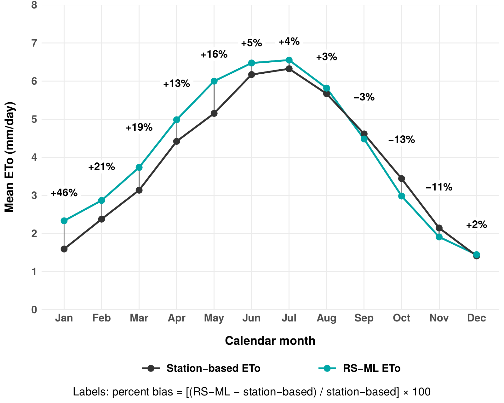
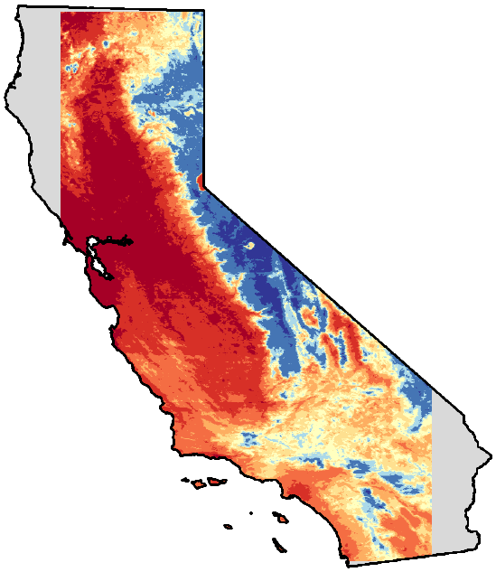
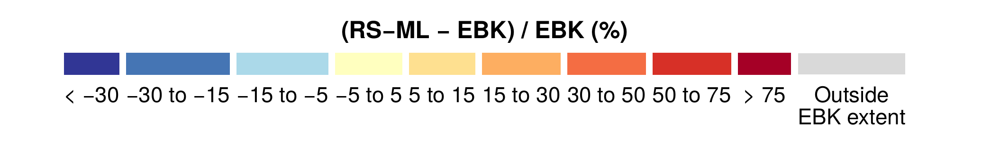

Can a satellite stand in for a weather station?
My thesis project compares two ways of measuring atmospheric thirst and the difference it makes for irrigating crops.
Farmers use weather data to quantify how much water they need. Agricultural water accounting requires accurate estimates of how much water crops need for budgeting and resource planning. Those estimates start with reference evapotranspiration (ETo): how much water the weather pulls from a field each day.
Change the weather and watch a farm’s water needs respond.
ETo Calculator
The weather
From ETo to irrigation
- Water to apply
- 1.9 in/week
- Whole field
- 75,600 gal/day
Simplified FAO-56 Penman–Monteith for a midsummer day at sea level. This tool was designed to visualize ETo, not to schedule irrigation.
How do farmers estimate ETo?
Farmers need accurate estimates of atmospheric thirst (ETo) to plan for their crops' irrigation demand. There are several ways to get there, and most rely on one of these:
Weather stations
Measure sun, temperature, humidity and wind every minute. California's CIMIS network has over 145 active stations.
CIMIS, California DWRLysimeters
Giant scales that weigh a block of soil and crop, measuring exactly how much water it loses to the air.
USDA Agricultural Research ServiceEddy covariance towers
Fast sensors on a tall tower track the water vapor carried up by swirling air (eddies) above a field.
NEON, National Science FoundationThe Penman–Monteith equation
Weather stations turn their measurements into ETo with one standardized equation, the FAO-56 Penman–Monteith. Lysimeters and flux towers are how scientists test it. Its four weather inputs are the same four sliders in the calculator above. Hover over a highlighted term to see what it means and how it’s measured.
How does ETo affect irrigation?
ETo is the starting point for figuring out how much water a farm needs.
(mm/day)×KcCrop coefficient: how thirsty a crop is compared with grass=ETcCrop water use
(mm/day)
(mm/day)×AreaAcres planted=NIRNet irrigation requirement: water farmers must supply beyond rainfall
Even small differences between ETo estimates add up to big differences in irrigation demand. In California, drought and a booming agricultural sector already make water availability and water rights complicated, so every acre-foot counts.
Example: one million acres of a crop with Kc = 1.0 over a 180-day dry season, starting from ETo of 5.0 mm/day.
What about places without a weather station?
California is huge and varied, and its weather stations are spread thin. A farm between stations has to borrow numbers from the nearest one, or from a map that guesses in between.
Enter machine learning
A machine learning (ML) model learns patterns from examples. Researchers show it years of ETo measured at weather stations, alongside what a satellite saw at the same place and time, like how hot the ground was during the day and at night. The model learns how those satellite readings relate to ETo. After that, it can estimate ETo from satellite data alone, for every spot on the map, even where there's no station.
Simplified illustration with made-up numbers. Each square is one raster pixel; the real model uses many more pixels, days and inputs.
Two ways to map atmospheric thirst
Both methods are built on the Penman–Monteith equation. What’s different is what goes in, and the shape of what comes out.
Weather stations
- Inputs
- Solar radiationAir temperatureHumidityWind speed
- Output
- Discrete points. One ETo value at each CIMIS station.
Satellites + machine learning
- Inputs
- Daytime land surface temperatureNighttime land surface temperatureLatitudeDay of year
- Output
- A continuous surface. One ETo value for every 1 km pixel.
Points and a surface can’t be lined up directly. So I developed a comparison framework to compare the two methods across California.
See how it worksHow do these methods compare across California?
ML models like this are promising, but most were built and tested somewhere else. My thesis tests one in California, side by side with the station-based method.
What I compared
- Station-based ETo from 107 CIMIS stations, mapped with kriging
- RS-ML ETo from MODIS land surface temperature, latitude and day of year
- Monthly values for 2014 to 2024, on the same 1 km grid
How
- Checked the satellite model at each station location
- Compared the two maps pixel by pixel, month by month
- Looked at which weather conditions line up with the differences
Preliminary findings

Where do they disagree?
Red means the satellite model estimates more ETo than the station-based map; blue means less. Press play and watch the coast stay red while the interior turns blue in summer.


See all twelve months at once
What's next?
Publishing
I’m preparing a manuscript on this comparison for publication in early 2027.
Testing other models
I hope to apply this comparison framework to test how well other RS-ML models transfer to new places, including models that estimate other hydrologic processes like groundwater depth.
Let's work together.
I'm looking for a full-time position doing quantitative environmental science and spatial analysis on the Central Coast. Let’s make science accessible to the communities who depend on it.
- Emailbrooke.murphy0207@gmail.com
- LinkedInin/brooke-murphy0207
- GitHubBam0207
- Based inCalifornia's Central Coast